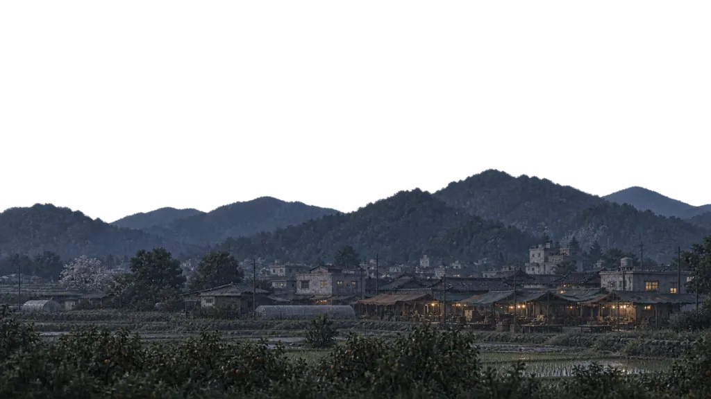
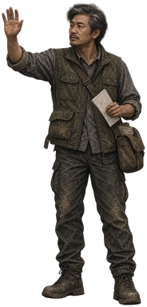
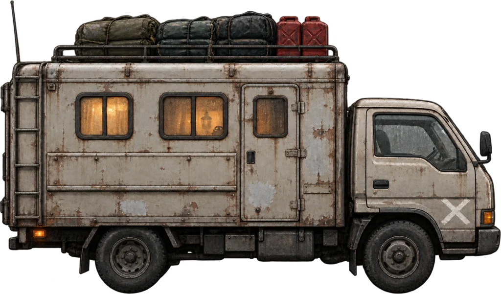

서울까지 400km · 움직임 초안
길 위에서, 잠깐 멈추다.
차가 멈춘 뒤에도 먼지는 잠시 남고,
길가의 사람이 조심스럽게 다가옵니다.



밀양 외곽DAY 2 · 늦은 오후
길가에 누군가 있다.
연료 28L차체 94%맑음
01 · 주행02 · 발견 · 감속03 · 정차 · 잔흔04 · 사람이 다가옴05 · 이야기가 시작되기 직전
같은 길, 같은 차.
움직임의 끝을 조금씩 다르게.
18초 후 정지합니다. ‘재생’을 껐다 켜면 다시 볼 수 있어요.
‘잔움직임’을 끄면 차체·먼지·걸음의 차이를 비교할 수 있어요.
시안에서 볼 부분
- 먼 풍경과 가까운 노면의 속도 차이
- 발견 후 서서히 느려지는 배경
- 정차할 때 차체의 짧은 기울어짐과 잔진동
- 차가 선 뒤 가라앉는 먼지와 사람의 접근
기존 그림을 움직여 타이밍을 보는 독립 CSS 초안입니다. 사람의 걸음은 위치·기울기로 표현한 임시 동작이며, 관절별 보행 프레임이나 바퀴 회전은 아직 제작하지 않았습니다. 인물은 특정 사건의 실제 배치가 아닙니다. 무음이며 현재 게임·저장과 연결되지 않습니다.